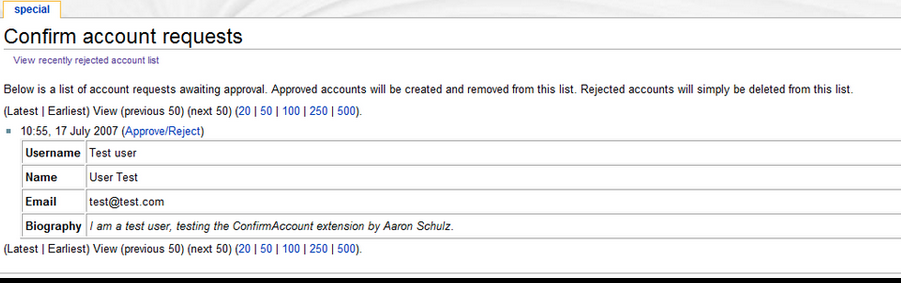
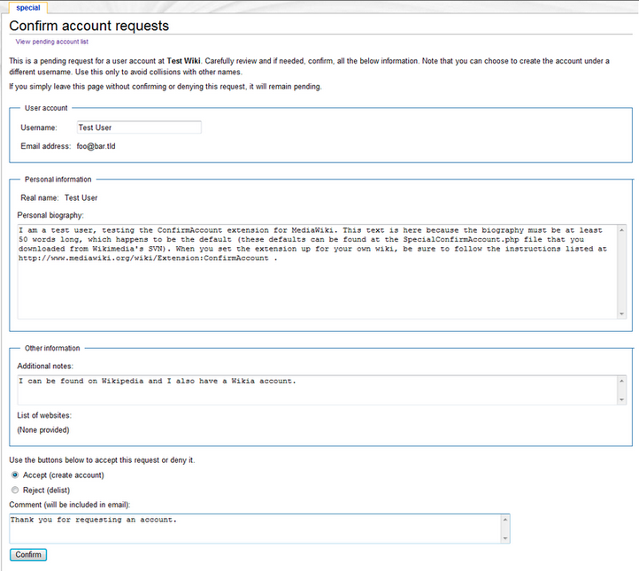

say hello to your wiki
what's a wiki?
let the group shout things out. encourage them.
wikis are...
- wikipedia
- encyclopedias
- open
- information
- free
- editable
- public
- commons
- resources
say the ones they didn't say
wikis are editable
wikis are historicyou can roll back a wiki!
enough already karissa, let's edit.
... I read in the media that the Web was great because it was ‘interactive,’ meaning you could click. This was not what I meant.
-Tim Berners-Lee, inventor of www and nice guy
Rather than seeing the internet as “a glorified television channel”... [the vision] in which people not only would browse pages but also would edit them as part of the process did not disappear.. wikis are still here
(Lamb, 2005)
wikis are community resources
wikis as
information commons
wikis *could* even be commons, where anyone can be involved in the governance -- or, all pages could be protected, and it could function like a regular boring website.
spam let's talk about the elephant in the room
what
can anyone do in an information commons?
- pollute
- bully
- troll (non-productive antagonism)
- fake facts (sometimes very well)
- astroturf
- spam (kinda not really)
- try to sell things (like loans)
- vandalize
what do people usually do?
what do people
usually do?
- create new pages
- write
- edit
- argue
- discuss
- rollback bad edits
- clean up
- flag spam
- kick people
- protect pages
no one likes spam (except the spammers)
the bad people aren't the problem. we are.
(a wiki without us will be a problem)
Active social networks are required to sustain wikis.. collaborative wikis in environments that lack active networks are likely to fail
(Walker, 2006)
 I know what you're thinking -- we won't find the time to manage that.
I know what you're thinking -- we won't find the time to manage that.a commons management strategy because everything is public on a wiki by default, we need a strategy to curb the bad behavior and promote the good.
protect and watch
watch
- Recent changes
- New users
- 'Watchlist'
never fear, you can always watch the wiki to see what's going on and catch vandalism before it becomes a problem.
watchlist is your personal watchlist. you can have it send you emails, even.
protect
- Important pages?
- Who can edit?
- Process to approve new editors?
ok, lets watch and protect some pages.
right now:
- users need to answer security question to register an account.
- don't need to verify email address (this doesnt stop spammers on mediawiki)
- should we approve users?

